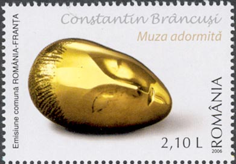

About This Site
Romania as Seen Through Its Stamps
"Romania as Seen Through Its Stamps" is a highly regarded, non-commercial philatelic website dedicated to exploring the history, culture, and landscapes of Romania through the lens of postage stamps.
The site is hosted at marci-postale.com and was founded in 2001, making it a true pioneer of the philatelic web at a time when Romanian stamps had almost zero internet presence.

The Author: Victor Manta
The creator, webmaster, and curator of the site is Victor Manta, a Swiss philatelist and stamp collector who spent many years living in Romania.
Background & Expertise: Manta possesses deep, firsthand knowledge of Romania's language, history, art, and literature. Because he has collected stamps since childhood, he uses his extensive philatelic expertise to provide a layered, highly educational commentary rather than just displaying image scans.
Pioneer Status: He is a former member of the Association of Romanian Philatelists and the Union of Swiss Philatelic Associations, and his web work has been exhibited at major international platforms like the EFIRO 2008 World Exhibition and the prestigious NOTOS 2021 European philatelic exhibition.
Website Scope & Commentary
While the site initially began as a basic guide to attract beginner collectors to Romanian stamps, it has grown over more than two decades into a profound historical archive.
Manta’s analytical approach sets the site apart through several unique elements:
Deconstructing Propaganda: A major portion of the site provides higher-level historical critique focused on how Romania's 45-year totalitarian communist regime used postage stamps as a weapon for political propaganda, ideological manipulation, and commercial profit.
Deep Historical Context: Rather than treating stamps as mere currency or paper, Manta connects the imagery on the stamps directly to the "tormented history of the Romanian people". He explores heavy themes, such as the Odessa massacre, historical overprints (e.g., the Brussels overprints), and forgotten cultural champions.
Art and Culture: The site serves as a portal into Romanian fine arts. For instance, specific sub-pages focus extensively on celebrated Romanian painters like Ion Andreescu and Nicolae Grigorescu, mapping out how their open-air and Barbizon-influenced impressionist masterpieces were adapted onto postal paper.



Technical Philately: For the expert specialist, Manta covers intricate forgeries, imperforate sheets, plate flaws, and postal cheaters, making it an irreplaceable reference directory.
The site operates on a bilingual basis (English and Romanian), striving to fulfill Manta's lifelong mission: using small pieces of paper to introduce international audiences to a country of original culture, beautiful landscapes, and friendly people.